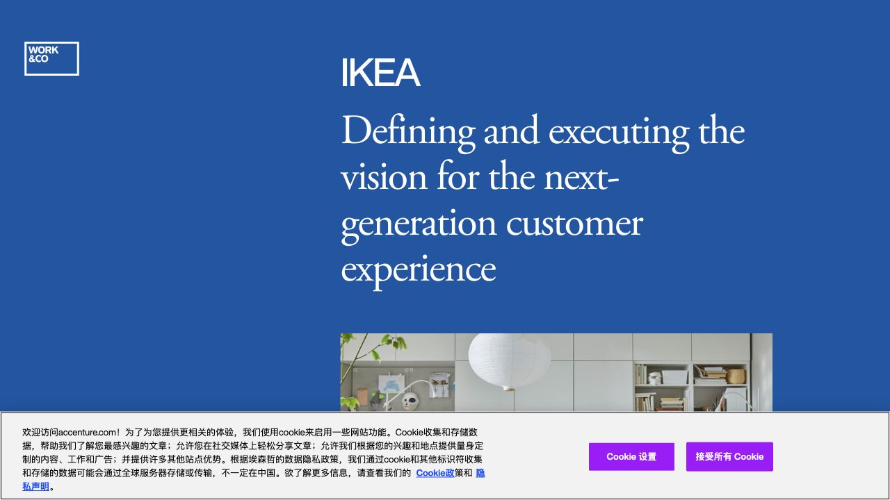
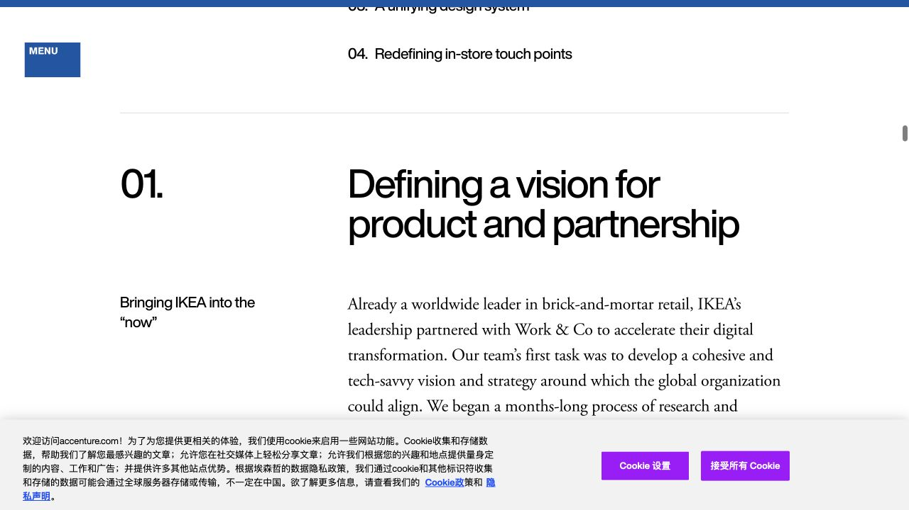
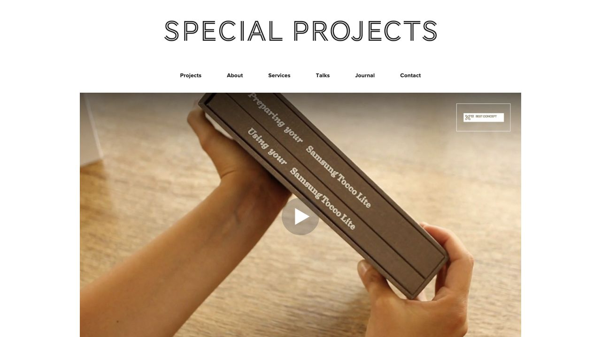
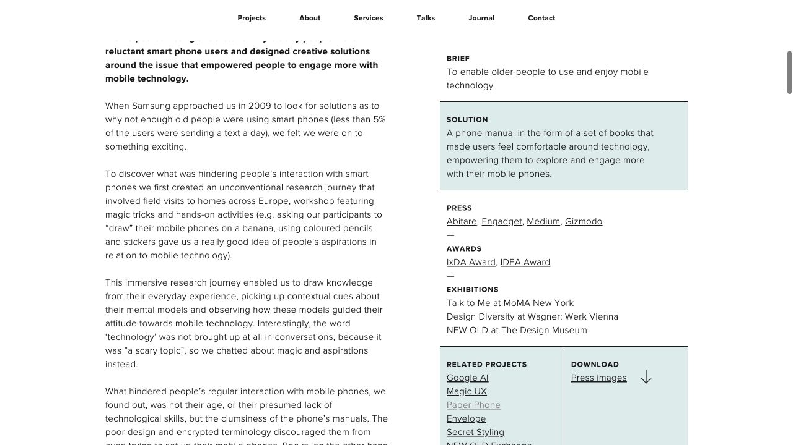
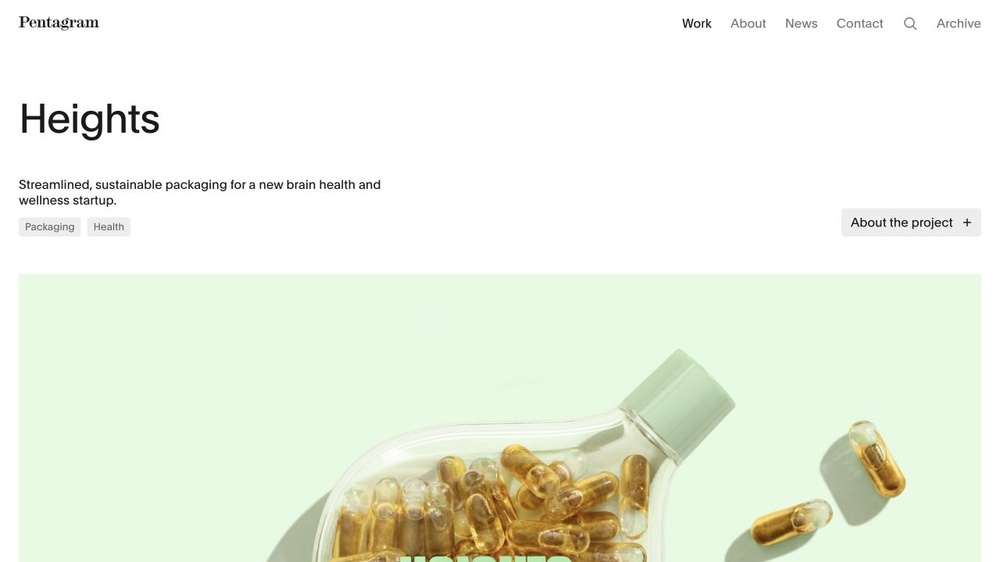
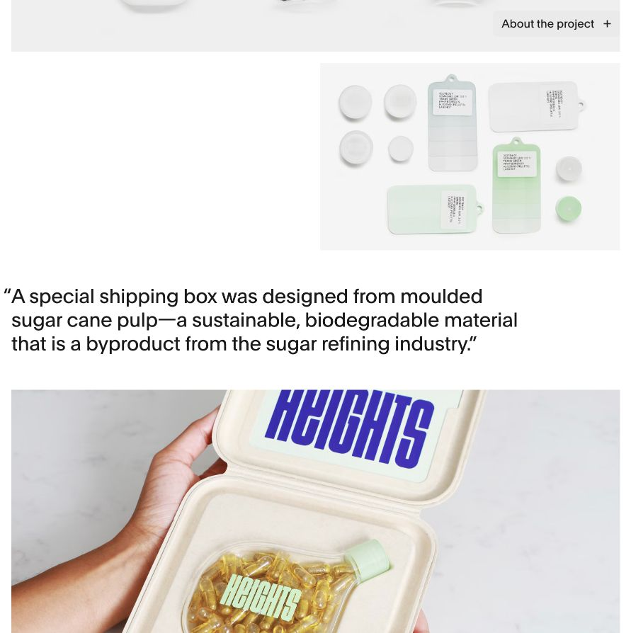
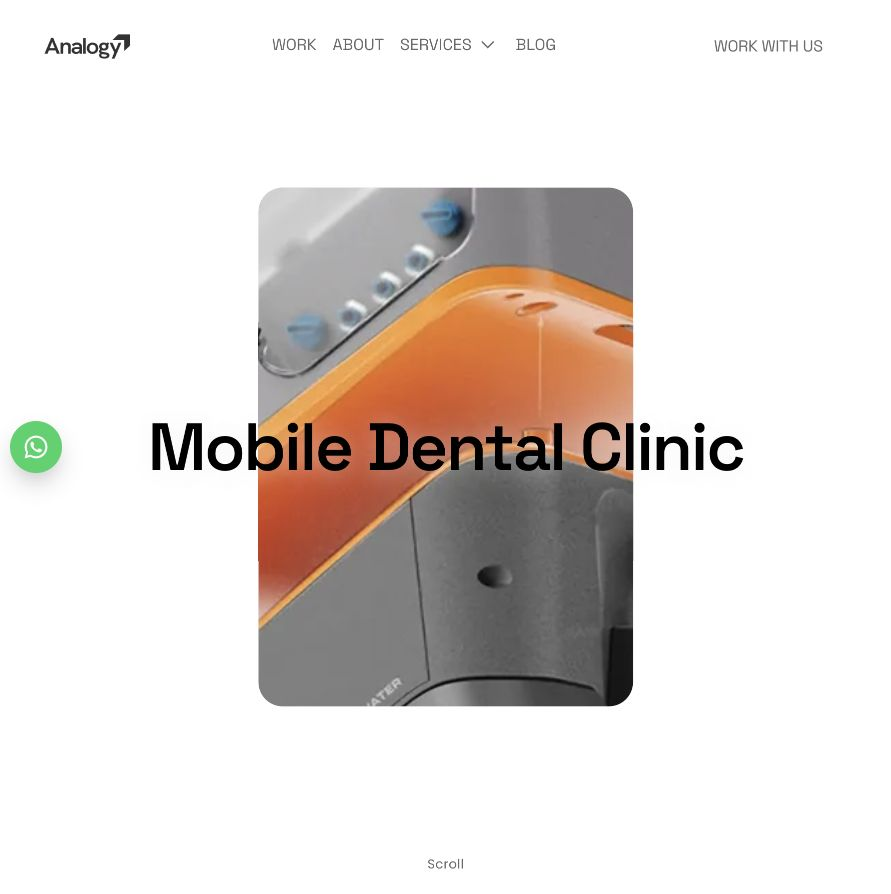
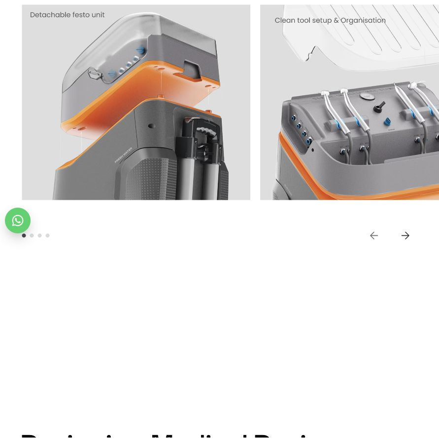

整体网站已调整为暖白与炭灰。下面是新找到的四个真实案例页：可对照首屏与内容中段，点击截图打开原网站体验。它们是版式参考，并非可直接下载的授权模板。选定后，用你的原有文字、模块和图片重新排版。
先概览，再按编号章节逐步展开。大标题、短引导和细节图交替，适合长篇项目过程。


Urban Respite：人群 → 旅程 → 服务系统 → 实体原型 → 界面。
章节目录 + 分章大标题 + 单一论点配图。保留你现有八章，不套用对方的商业成果数据。
正文与项目信息分栏；研究缘由、发现、解决方式连续阅读，产品照片在叙事中逐步出现。


四个项目的背景、访谈、设计推导，尤其适合把“为什么这样做”讲清楚。
主栏讲故事，窄栏放方法和项目资料；原有访谈、原稿拼图完整嵌入。
简洁的项目标题和摘要，单张大图与双图、引语交替，强调实体细节与视觉节奏。


Plastic Eternity / The Armor of Form 的形态、结构、材料和最终成品；Azure 的棋盘与套装。
大图与并列图交替，关键结论独立排版。完整过程仍在正文中，避免隐藏研究内容。
产品首图、挑战介绍、左右图文和关键功能展示，围绕产品如何从需求走向实体展开。


Plastic Eternity / The Armor of Form 的结构探索、制作、电子交互和最终演示。
挑战 → 设计回应 → 结构与制作 → 功能与使用。仅重排你已有内容，不添加未经确认的开发或测试结果。
建议优先看 D01 的章节组织与 D02 的研究叙述；想突出成品视觉可选 D03，想强调实体制作可选 D04。选定前保持现有内容页版式，所有原始图文、原稿拼图和已确认的删改均保留。